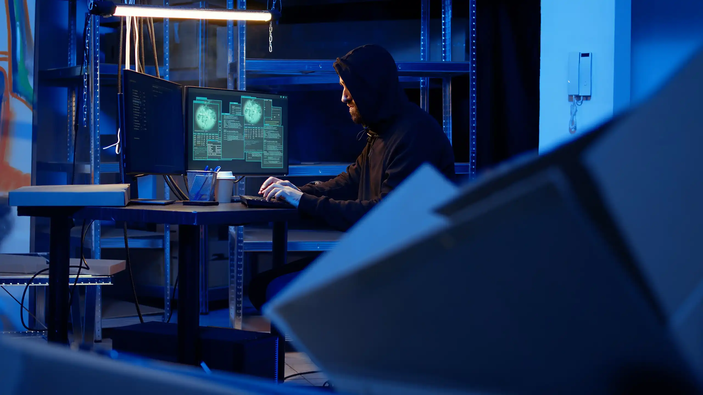

Soporte tecnológico empresarial 24/7
Canales de atención especializados para incidentes, soporte remoto, monitoreo y asistencia técnica empresarial.
Canales de Atención
Accede rápidamente a nuestros canales de soporte y asistencia tecnológica empresarial.
Crear Ticket
Registra incidentes y solicitudes de soporte empresarial.
Mesa de Ayuda
Atención remota y soporte técnico especializado para usuarios.
Reportar Incidente
Reporta fallas críticas o afectaciones operativas.
Base de Conocimiento
Consulta guías, preguntas frecuentes y documentación técnica.

Soluciones orientadas a continuidad operativa
Nuestro enfoque de soporte TI permite responder rápidamente a incidentes tecnológicos, garantizando estabilidad y productividad empresarial.
¿Necesitas ayuda inmediata?
Nuestro equipo está preparado para ayudarte con incidentes, soporte y soluciones empresariales.
Contactar soporte